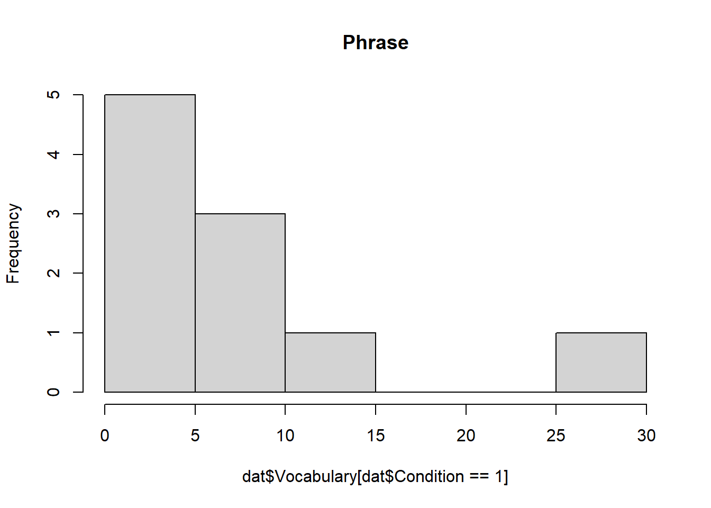
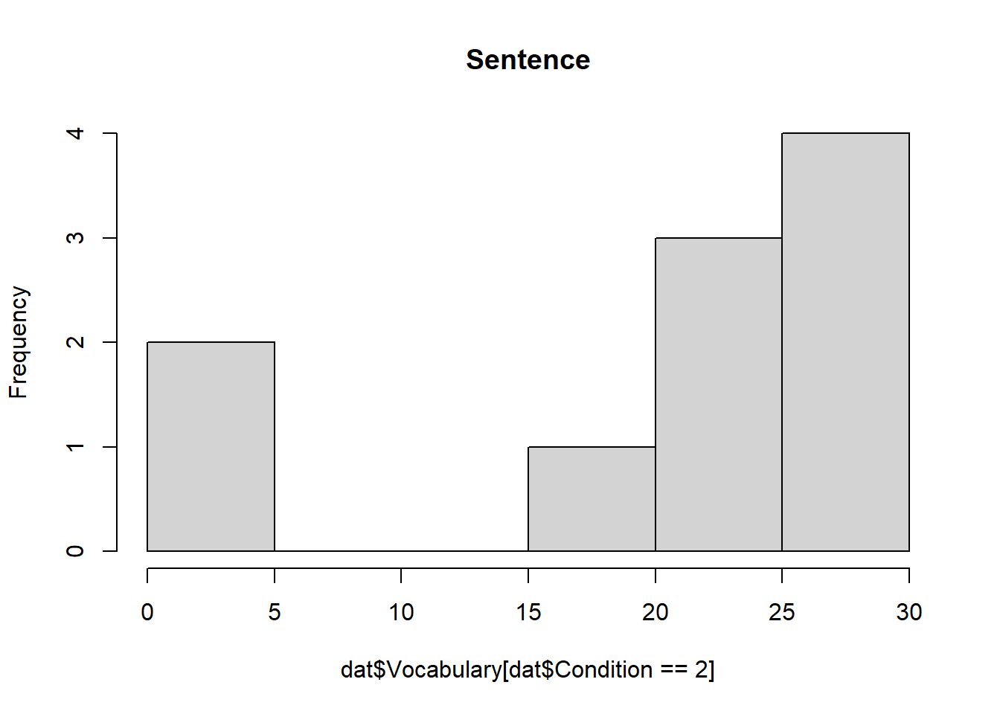
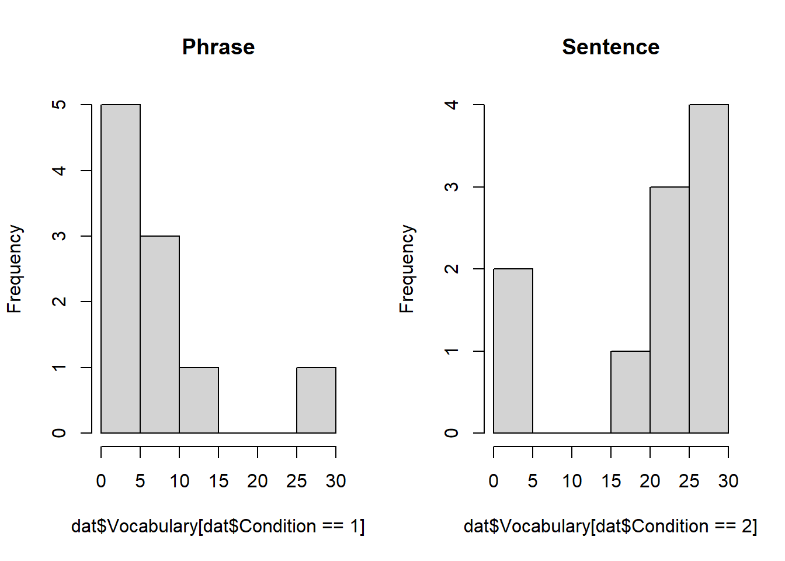
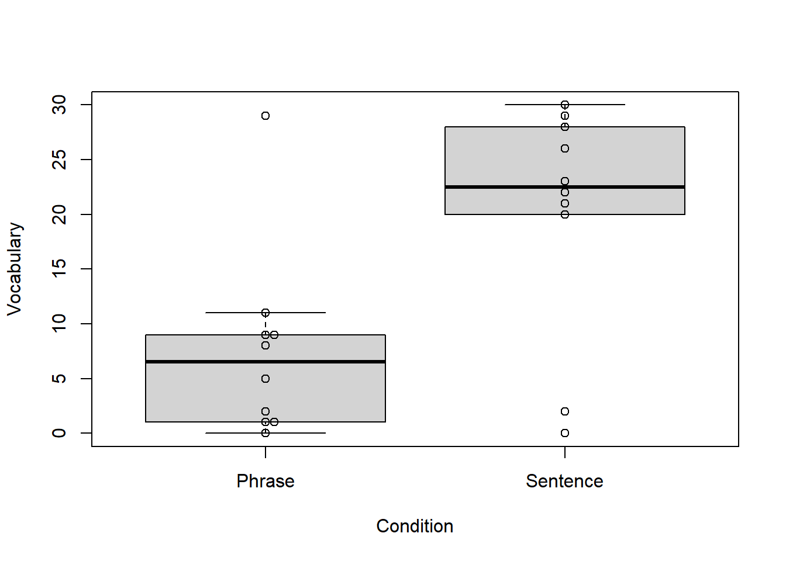

| country | 1999 | 2000 | sum |
|---|---|---|---|
| Afghanistan | 745 | 2666 | 3411 |
| Brazil | 37737 | 80488 | 118225 |
| China | 212258 | 213766 | 426024 |
Week 14: ノンパラメトリック検定
事前の確認
この講義のRプロジェクトを開いていますか？
英数字で名前を付けた本日の講義のファイルを作成しましたか？
- .Rでも.Rmdでもどちらでも大丈夫です。
今日の目標
- ノンパラメトリック分析の理論を概念的に理解できる
- ノンパラメトリック検定をRで実装しその結果を適切に報告できる
ノンパラメトリック検定
母集団に特定の分布を仮定しない検定に対して用いることができる手法。
- e.g., カイ二乗検定、フィッシャーの正確確率検定
名義尺度データや順序尺度データの分析に使われる
名義尺度データ
- クロス集計表などで集計結果（それぞれの度数）が示される
カイ（ χ ）二乗検定（chi-square test）
観測された度数と期待値に偏りがあるかを検定する
帰無仮説：「質的変数間の連関（関連）はない」
- 質的変数については相関ではなく、連関と呼ぶ
Note
期待値：「もし、どのグループにも差がなかったら、各セルにはどれくらいの人数が入るはずか？」という理論上の人数。期待値を求めるには、各セルの行合計×列合計 ÷ 全体の合計で求める
χ 二乗値は χ 二乗分布に近似的に従うという理論に基づいている
2 × 2分割表の例
observed <- matrix(c(30, 20, 10, 40), nrow = 2, byrow = TRUE)
rownames(observed) <- c("男性", "女性")
colnames(observed) <- c("購入した", "購入しなかった")
observed %>%
kbl() %>%
kable_styling(
bootstrap_options = c("striped"),
full_width = T)| 購入した | 購入しなかった | |
|---|---|---|
| 男性 | 30 | 20 |
| 女性 | 10 | 40 |
# 行・列・全体の合計
row_totals <- rowSums(observed)
col_totals <- colSums(observed)
grand_total <- sum(observed)
# 期待度数の計算： E_ij = (行合計 × 列合計) / 全体合計
expected <- outer(row_totals, col_totals) / grand_total
expected %>%
kbl() %>%
kable_styling(
bootstrap_options = c("striped"),
full_width = T)| 購入した | 購入しなかった | |
|---|---|---|
| 男性 | 20 | 30 |
| 女性 | 20 | 30 |
χ 二乗値の計算
- それぞれのセルに対し、観測度数から期待度数を引いて二乗したものを期待度数で割る。そしてそれらを合計する。
[ ^2 = ]
chisq_stat <- sum((observed - expected)^2 / expected)
chisq_stat[1] 16.66667自由度の計算
（カテゴリー数 - 1）
2 × 2の表の場合、(2 - 1) × (2 - 1) = 1
df <- (nrow(observed) - 1) * (ncol(observed) - 1)- χ 二乗値と自由度をもとに、棄却域から大きいければ帰無仮説を棄却する
pchisq(chisq_stat, df = df, lower.tail = FALSE)[1] 4.455709e-05カイ二乗検定の前提と留意点
観測データの独立性
- データを表に分類する際に、そのデータはいずれか1つのセルに1回しか入れられない
正規分布は仮定しないが、標本が無作為抽出されていることが前提
サンプルサイズ
最低1つのセルの期待値が5以上
- 5以下の場合はフィッシャーの正確確率検定が使用される
対応のあるデータの分析はできない
- 同じ人から複数回データを取っている（e.g., 留学前と後の比較）
2 × 2の表（自由度 1）の場合、Type 1 Errorが大きくなる
- この場合フィッシャーの正確確率検定か、イェーツの補正をかけた p 値を報告する。しかし、イェーツの補正は過剰に修正されるため、フィッシャーの正確確率検定の方が推奨されている
1変数のカイ二乗検定は適合度検定、2変数のカイ二乗検定は独立性の検定とも呼ばれる
名義尺度の効果量
Cohenの w と r
- 2 × 2の分割表で使われる
\(w = r = \sqrt{\frac{\chi^2}{N}} = \sqrt{\frac{z^2}{N}}\)
クラメールのV
- 大きな分割表（2 × 2以上）などで使われる
\(V = \sqrt{\frac{\chi^2}{N(k - 1)}}\)
- \(k\)：行数または列数の小さい方
カイ二乗検定（1変数）
データの読み込み
英語の授業で60名の学生に対し、歌、映画、ニュースのどれを使った授業を受講したいかのアンケートを実施。これら3つの種類の希望者の数に有意な違いがあるかを調べる。
3つのカテゴリの期待値は、それぞれ \(\frac{60}{3} = 20\)
帰無仮説：「3つの種類の度数は一様である」
dat <- read.csv("sample_data/chisq.csv")中身の確認
head(dat, 3) Method
1 song
2 song
3 songクロス集計表
table(dat)Method
movie news song
29 14 17 カイ二乗検定の実施
table()の結果を保存
Note
今回紹介しているカイ二乗検定を行うための関数では、データフレーム型ではなく、表形式にデータを成形する必要があります。
tx <- table(dat)
txMethod
movie news song
29 14 17 chisq.test()関数を実行p 値が有意水準 .05以下になっており、受講希望に有意差がある
library(stats)
chisq.test(tx)
Chi-squared test for given probabilities
data: tx
X-squared = 6.3, df = 2, p-value = 0.04285多重比較
3つの種類のどこに有意差があるかを検定する
各カテゴリ間でカイ二乗検定を3回行う。検定を繰り返すため、ボンフェロー二の方法で有意水準の調節をする
3回繰り返すため、有意水準の .05を3で割った値を基準にする（ p = .0167）
映画 vs. ニュース
chisq.test(c(29, 14), p = c(0.5, 0.5))
Chi-squared test for given probabilities
data: c(29, 14)
X-squared = 5.2326, df = 1, p-value = 0.02217- 映画 vs. 歌
chisq.test(c(29, 17), p = c(0.5, 0.5))
Chi-squared test for given probabilities
data: c(29, 17)
X-squared = 3.1304, df = 1, p-value = 0.07684- 歌 vs. ニュース
chisq.test(c(17, 14), p = c(0.5, 0.5))
Chi-squared test for given probabilities
data: c(17, 14)
X-squared = 0.29032, df = 1, p-value = 0.59論文への記載
学生60名に映画、ニュース、歌のうちどれを使った授業を受講したいか調査した結果、それぞれ29、17、14人であった。カイ二乗検定を行った結果、\(\chi^2\)(2) = 6.30、p = .0429と5%有意水準で受講希望者が有意に異なっていた。そこで多重比較を行い、ボンフェロー二の方法で補正した有意水準（ α = .0167）と比較した結果、どこにも有意差は見られなかった。
- \(\chi^2\)(自由度)
3×3分割表のカイ二乗検定
高校生55名の単語テストの得点順に3グループに分けた後、「声に出す」「書き写す」あるいは、その「両方」のいずれの方法で暗記したかを尋ねた。
- 帰無仮説：「単語テストの成績と暗記方法に関連はない」
両方 書き写す 声に出す
下位群(1) 4 7 10
中位群(2) 6 4 6
上位群(3) 13 3 2練習用データの作成
x <- matrix(c(4, 7, 10, 6, 4, 6, 13, 3, 2),
ncol = 3, nrow = 3, byrow = T)カイ二乗検定の実施
期待度数が0、もしくは期待度数が5未満になるセルが全体の20%以上の場合に警告メッセージが表示される。
この場合、Fisherの正確確率検定の値も確認する
res <- chisq.test(x)Warning in chisq.test(x): Chi-squared approximation may be incorrectres
Pearson's Chi-squared test
data: x
X-squared = 11.818, df = 4, p-value = 0.01876- カイ二乗検定と結果に違いはない。
stats::fisher.test(x)
Fisher's Exact Test for Count Data
data: x
p-value = 0.01728
alternative hypothesis: two.sided効果量の算出
vcdパッケージのassocstats関数でCramerの V を算出する- 0から1の範囲を取り、1に近いほど連関が強い。
#install.packages("vcd")library(vcd)Warning: package 'vcd' was built under R version 4.3.3Loading required package: gridassocstats(x) X^2 df P(> X^2)
Likelihood Ratio 12.511 4 0.013929
Pearson 11.818 4 0.018758
Phi-Coefficient : NA
Contingency Coeff.: 0.421
Cramer's V : 0.328 調整済み標準化残差の確認（残差分析）
どのセルの観測度数が期待度数より有位にずれているかを分析する
- 絶対値1.96（5%水準棄却値）より絶対値が大きいものを確認
print(table_data) 両方 書き写す 声に出す
下位群(1) 4 7 10
中位群(2) 6 4 6
上位群(3) 13 3 2res$stdres [,1] [,2] [,3]
[1,] -2.6905996 1.05418707 1.8497949
[2,] -0.4158472 -0.04956705 0.4831714
[3,] 3.1883928 -1.04353624 -2.3829827結果の記載
単語テストを受けた55名の単語の暗記方法とテストの成績に関連があるかをカイ2乗検定で分析した。その結果、\(\chi^2\)(1) = 11.82、p = .018、 Cramer’ V = .33と、有意な関連が見られた。 クロス集計表で期待値5未満が全体の20%以上あったため、Fisherの直接法を行った。その結果、p = .017と5%水準で有意だった。そこで、調整済み標準化残差で判断したところ、上位群は暗記の際に声を出す方法だけを使用する場合が有意に少なく（ z = -2.38, p < .05）、その方法と書き写す方法の両方を使う傾向にあることがわかった（z = -3.19, p < .08）。それに対して、下位群は声を出す方法だけを使う傾向があり（ z = 1.85. p <.05）、両方の方法を使うことが有意に少なかった（ z = -2.69, p < .01）。中位群にはそのような顕著な傾向はみられなかった。
リスク比とオッズ比
- 2群のカテゴリデータの効果量として使われる
リスク比（相対危険度）
ある集団で「イベント（例：病気になる）」が起こる確率（割合）
例「海外経験がある人は英語を話すのが好きな傾向があるか」
| 好き | 嫌い | 計 | |
|---|---|---|---|
| 海外経験あり | 10 | 11 | 21 |
| 海外経験なし | 8 | 25 | 33 |
| 計 | 18 | 36 | 54 |
- 海外経験のある人で英語で話すのが好きな人の割合
[ リスク = = = = 0.476 ]
- 海外経験のない人で英語で話すのが好きな人の割合
[ リスク = = = = 0.476 ]
リスク比の算出
海外経験のある人で英語を話すのが好きな人は、海外経験のない人の何倍か
[ リスク比 = = = 1.964 ]
- 海外経験のある人で英語を話すのが好きになる確率は、海外経験のない人の約2倍である
オッズ比
- 「イベントが起こる確率 ÷ 起こらない確率」（オッズの比）
[ オッズ = = = 0.909 ]
- 海外経験のある人は英語を話すのが好きと嫌いの比率がほぼ等しい
[ オッズ = = = 0.320 ]
海外経験のない人は英語を話すのが好きと嫌いの比率は0.320:1で、嫌いが約3倍高い
オッズ比の計算 [ オッズ比 = = 2.841 ]
- 海外経験のある人は、英語を話すのが好きになる確率が、海外経験のない人の2.84倍である
Note
リスク比もオッズ比も、分子を何にするかで数値やその解釈が変わる。分子に大きい値の方を持ってくる方が解釈しやすい。結果が分かった後に、その原因をさかのぼって調査する研究（後ろ向き調査）では、リスク比を使うことができない。なぜならば、「全体のうち何人が○○になったか（＝リスク、割合）」という情報を得ることができないからである。リスク比の算出には、事前に調査対象を決め、その対象のうち何名が○○になったかを観察する必要がある。
対応のあるデータを比較する
マクネマー検定
2 × 2分割表で使用される
t 検定に似ている
帰無仮説：「対応する2つのカテゴリ変数において、変化の方向に偏りがない」。すなわち、「両条件間で差がない（確率が等しい）」。
- 例「薬を飲んで改善した人の数」と「薬を飲んで悪化した人の数」が同じであるかを比べている
話すことへの自信に関するアンケート調査
- 話す前と後で自信に統計的有意な変化があったかを分析する
| ない | ある | |
|---|---|---|
| ない | 15 | 21 |
| ある | 3 | 11 |
データの読み込み
1列目と2列目のデータのみ読み込む
dat <- read.csv("sample_data/McN_Signed.csv")[1:2]head(dat) Before2 After2
1 0 0
2 0 0
3 0 0
4 0 0
5 0 0
6 0 0table()で分割表を作成する
table(dat$Before2, dat$After2)
0 1
0 15 21
1 3 11mcnemar.test()で分析を行う
stats::mcnemar.test(dat$Before2, dat$After2)
McNemar's Chi-squared test with continuity correction
data: dat$Before2 and dat$After2
McNemar's chi-squared = 12.042, df = 1, p-value = 0.0005202- 効果量の算出
[ 効果量 r = = = 0.708 ]
論文への記載の例
1年問の留学を経験した50名の学生に対して、留学先の言語で話す自信があるかを留学前後で尋ね、その変 化をマクネマー検定で分析した。その結果、留学前後で、「自信がない」から「自信がある」となった学生は21 名で、逆に、「自信がある」から「自信がない」に変わった学生は3名で、検定の結果、p < .001で有意な変化が見られた。また、効果量も r = .71と大きく、1年問の留学は、話すことへの自信につながることが示された。
コクランのQ検定
対応ある3変数以上の間でそれぞれの比率に変化や差があるかを検定（フリードマン検定の2値データ版）。
データは2値データ
帰無仮説「1/0の比率がすべての変数間で等しい」
最低でも10以上のサンプルが必要
データの読み込み
dat <- read.csv("sample_data/Cochran.csv")head(dat, 2) Listening Reading Speaking Writing
1 0 1 0 0
2 1 1 0 0nonparパッケージのcochrans.q()関数を使う
#install.packages("nonpar")
library(nonpar)
cochrans.q(dat)
Cochran's Q Test
H0: There is no difference in the effectiveness of treatments.
HA: There is a difference in the effectiveness of treatments.
Q = 9.71428571428572
Degrees of Freedom = 3
Significance Level = 0.05
The p-value is 0.0211576681477015
There is enough evidence to conclude that the effectiveness of at least two treatments differ.
マクネマ―検定による多重比較
- 4回行うので、α は 0.0125
mcnemar.test(dat$Listening, dat$Speaking)
McNemar's Chi-squared test with continuity correction
data: dat$Listening and dat$Speaking
McNemar's chi-squared = 2.2857, df = 1, p-value = 0.1306mcnemar.test(dat$Listening, dat$Writing)
McNemar's Chi-squared test with continuity correction
data: dat$Listening and dat$Writing
McNemar's chi-squared = 0.25, df = 1, p-value = 0.6171mcnemar.test(dat$Reading, dat$Speaking)
McNemar's Chi-squared test with continuity correction
data: dat$Reading and dat$Speaking
McNemar's chi-squared = 6.125, df = 1, p-value = 0.01333mcnemar.test(dat$Reading, dat$Writing)
McNemar's Chi-squared test with continuity correction
data: dat$Reading and dat$Writing
McNemar's chi-squared = 1.4545, df = 1, p-value = 0.2278- 効果量はマクネマー同様に、カイ二乗値をデータ数で割ってルートを取る
論文への記載の例
学生15人に対して、英語の4技能に対する苦手意識を調査した技能問によって得意と感じる比率に差があるかどうかを、コクランの Q検定で検証したところ、Q(3) = 9.714, p = .021と 5%水準で有意であったそこで,マクネマー検定であらかじめ関心のある技能問で4回の多重比較を行ったところ、ボンフェロー二の方法で調整した有意水準( = .05/4 = 0.0125)で判断すると、どの条件間にも有意差はなかった。
順序尺度データ
順序尺度データを扱うノンパラメトリック検定の特徴
母集団から無作為抽出したデータであることを前提
正規性を仮定しないが、等分散性は仮定する
代表値として中央値、バラツキ度に（四分位）範囲、四分位偏差
平均値は外れ値の影響を大きく受けてしまうため
Week 2のまとめセクションを参照
Note
パラメトリック検定に比べ、外れ値が含まれるデータに頑健。しかし、サンプルサイズが極端に少ない場合や2群の散らばりが大きく偏っている場合は、正確な検定が困難になる
サンプルサイズや散布度に問題がある場合
- 正確確率検定：サンプルサイズがかなり小さい場合や偏りがある場合に推奨される（e.g., カイ二乗検定でのフィッシャーの正確確率検定）。サンプルサイズが大きい場合は、モンテカルロ法と呼ばれる、シミュレーションをもとにした解析法が用いられる。
順序尺度検定の実施
対応なしの2群比較（ウィルコクソンの順位和検定）
データ: 習得させたい単語を10名には句の形で、別の 10名には文の中で覚えさせ、2週間後にどちらの条件が単語の定着がより良かったかを調べたもの。
- 帰無仮説：「単語提示条件の違いによって、語彙テスト得点の中央値に差はない」
dat <- read.csv("sample_data/WilcoxonRankSum.csv")head(dat, 3) Condition Vocabulary
1 1 5
2 1 8
3 1 11- 因子型データに変更
dat$Condition <- factor(dat$Condition)- 描画
hist(dat$Vocabulary[dat$Condition == 1], main = "Phrase")
hist(dat$Vocabulary[dat$Condition == 2], main = "Sentence")
- 描画（並列）
par(mfrow = c(1,2))
hist(dat$Vocabulary[dat$Condition == 1], main = "Phrase")
hist(dat$Vocabulary[dat$Condition == 2], main = "Sentence")
- 箱ひげ図 + 蜂群図
with(dat, boxplot(Vocabulary ~ Condition, names = c("Phrase", "Sentence")))
library(beeswarm)
beeswarm(dat$Vocabulary ~ dat$Condition, add = T)
library(psych)
Attaching package: 'psych'The following objects are masked from 'package:ggplot2':
%+%, alphadescribeBy(dat$Vocabulary, group = dat$Condition)
Descriptive statistics by group
group: 1
vars n mean sd median trimmed mad min max range skew kurtosis se
X1 1 10 7.5 8.54 6.5 5.75 6.67 0 29 29 1.42 1.16 2.7
------------------------------------------------------------
group: 2
vars n mean sd median trimmed mad min max range skew kurtosis se
X1 1 10 20.1 10.64 22.5 21.38 6.67 0 30 30 -0.97 -0.72 3.36正規性がなく、データに同じ数字があるため、正確確率検定を行う
paired = TRUEにすると、符号付順位検定となる
#install.packages("exactRankTests")
library(exactRankTests) Package 'exactRankTests' is no longer under development.
Please consider using package 'coin' instead.res <- wilcox.exact(dat$Vocabulary ~ dat$Condition,
paired = FALSE, correct = FALSE)
res
Exact Wilcoxon rank sum test
data: dat$Vocabulary by dat$Condition
W = 22.5, p-value = 0.03696
alternative hypothesis: true mu is not equal to 0- 効果量の算出
pval <- res$p.value
z1 <- qnorm(1-(pval/2))
r1 <- z1 / sqrt(length(dat$Vocabulary))
r1[1] 0.4664975論文への記載の例
それぞれ10名の生徒に句または文単位で単語を覚えさせた後、30点満点の語彙テストを行った。得点が正規分布から逸脱していたため、ウィルコクソンの順位和検定を用いて、暗記条件間で語彙の定着度に差があるかを検証した。その結果、文グループ（mediam = 22.5）が5%水準で有意に句グループ（mediam = 6.5）より高いことがわかった（ W = 22.5, p = .037, r = .47)。また、効果量も中程度以上であった。このことから、単語を文単 位で提示された方が、句単位で提示するより効果的だと言える。
1要因の対応ある2群の比較（ウィルコクソンの符号付順位検定）
マクネマ―検定で使用したデータセットを使用する
3列目と4列目のデータのみ読み込む
学生50名に対し、6か月間の留学前後に、留学先の言語で話す自信度（ある[2]・少しある[1]・ない[0]）を尋ねた。順序性があるため順序尺度として扱い、留学前後でどう自信度が変化したかを分析する。
dat <- read.csv("sample_data/McN_Signed.csv")[3:4]head(dat) Before3 After3
1 0 0
2 0 0
3 0 0
4 0 0
5 0 0
6 0 0library(psych)
describe(dat) vars n mean sd median trimmed mad min max range skew kurtosis se
Before3 1 50 0.98 0.77 1 0.98 1.48 0 2 2 0.03 -1.34 0.11
After3 2 50 1.14 0.86 1 1.18 1.48 0 2 2 -0.26 -1.62 0.12res <- wilcox.exact(dat$Before3, dat$After3, paired = T, correct = FALSE)
res
Exact Wilcoxon signed rank test
data: dat$Before3 and dat$After3
V = 22.5, p-value = 0.05737
alternative hypothesis: true mu is not equal to 0効果量の算出
- 対応のあるデータのため、それぞれの条件のサンプルサイズを足す
pval <- res$p.value
z1 <- qnorm(1-(pval/2))
r1 <- z1 / sqrt(100)
r1[1] 0.1900458論文への記載の例
50名の学生を対象に6ケ月の留学前後で,留学先の園語を話す自信にっいて変化があったかどうかを調査した。ウィルコクソンの符号付順位和検定の正確性検定で分析したところ、V = 22.5、p = .057、p = 0.190で有意差はなかった。
関係の強さ（順序相関係数）
スピアマンの順位相関係数、ケンドールの順位相関係数：ノンパラメトリック検定版の相関係数
係数の解釈はパラメトリック検定と同じで、-1から1の間をとる
関数はピアソンの時と同じ
cor.test()。method =個所で指定する。
cor.test(変数A, 変数B, method = "spearman")cor.test(変数A, 変数B, method = "kendall")- ここで紹介した以外にも、対応のない3群以上の比較で使用されるクラスカル・ウォリスの順位和検定や対応のある3条件以上の比較で使用されるフリードマン検定などがある
Note
ノンパラメトリック検定では、中央値検定、順位検定、符号検定などの種類がある。中央値検定では、中央値を超える人数と中央値以下の人数を数え、その比率を検討する。つまり、データの順番を無視し、2分割で検定を行う。順位和検定では、データのもつ順位が検定に考慮されるため、中央値検定よりもデータの持つ情報量の損失は小さい。 符号検定では、対応のあるデータの中央値検定のような方法で、データの値が正か負かを考慮して検定しているため、こちらもデータの順位の情報は損失している。符号検定よりも順位付けを行う符号付順位検定の方がデータの情報の損失は小さい。
次週までの課題
課題内容
小テストに向けて今回の内容を復習する。必ず手でコードを入力してRを実行する。
世代（第一世代、第八世代）・進化（0:進化しないポケモン、2:1回進化済のポケモン、3: 2回進化済のポケモン）ごとのポケモンの数に有意な差があるか分析を行い、その結果を報告してください。また、検定を行う前に、度数分布表や作図を行い、全体的な傾向を提示してください。
pokemon_data.csvを使用します。データをRStudioに読み込んだら、以下のコードで今回の分析に必要なデータを絞り込み、そのデータを対象に分析等を行ってください。
library(tidyverse)
# datにpokemon_data.csvが入っているとします。
include <- c("1", "8")
dat2 <- dat %>%
filter((世代 %in% include)) %>%
filter(進化 != 1) %>%
dplyr::select(進化, 世代)提出方法
R Markdownファイルで作成し、HTMLファイルに変換しTACTへ提出
締め切りは今週の木曜日23:59まで
参考文献
📚竹内・水本（編著）（2023）『外国語教育研究ハンドブック【増補版】―研究手法のより良い理解のために』松柏社
📚平井・岡・草薙（編著）（2022） 『教育・心理系研究のためのＲによるデータ分析―論文作成への理論と実践集』東京図書
📚三浦（監）（2004）『英語教師のための教育データ入門―授業が変わるテスト・評価・研究―』大修館書店